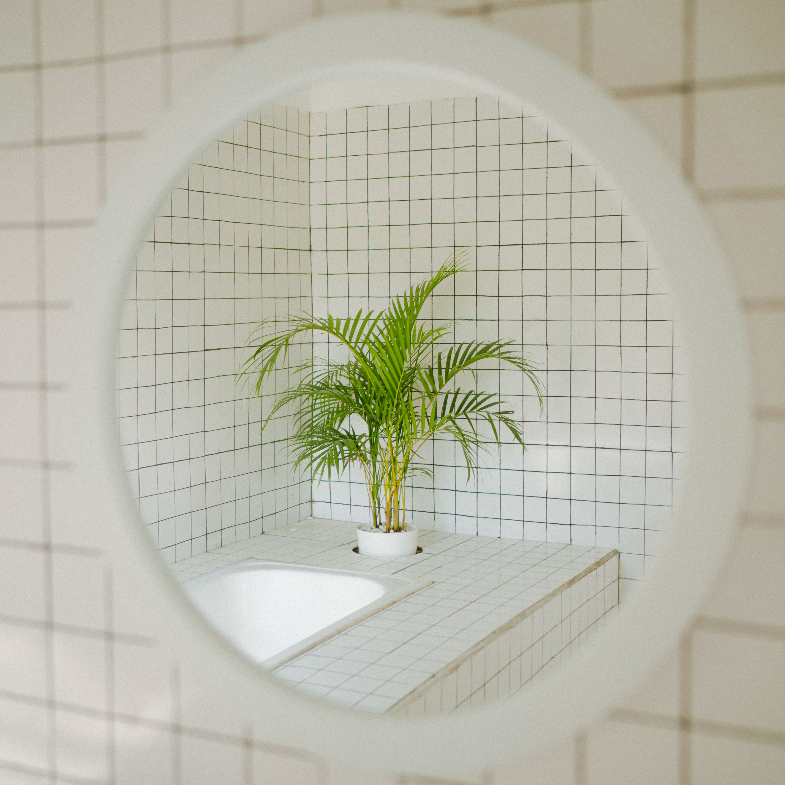
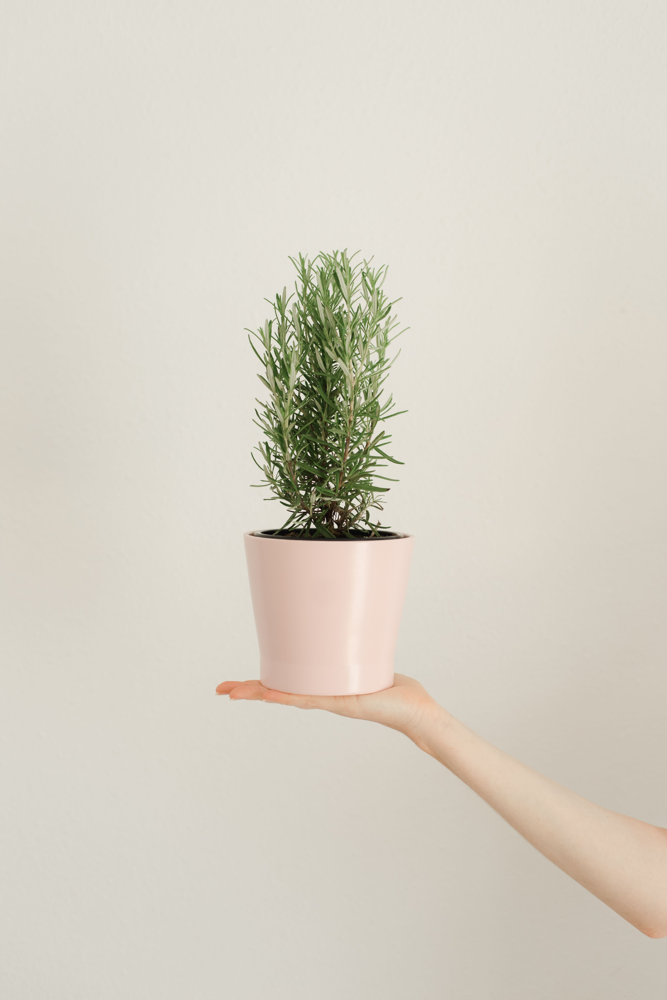

En este artículo
Introducción
Prepara el jardín para el otoño con una revisión del suelo, riego, hojas, poda, plantaciones y protección adaptada al clima de tu región.
Una buena preparación evita decisiones impulsivas y permite concentrar el esfuerzo donde realmente aporta resultados. Antes de comprar productos, retirar plantas o reorganizar un espacio, conviene observar las condiciones existentes y definir un objetivo concreto.
Esta guía desarrolla un proceso práctico, pensado para aplicar por etapas. Las recomendaciones generales deben adaptarse al clima, a la especie vegetal, al tipo de vivienda y a las instrucciones de fabricantes cuando intervienen herramientas, equipos o productos.
Cuando una tarea implica ramas grandes, instalaciones eléctricas, trabajos en altura, estructuras, productos peligrosos o una situación que no puedes evaluar con seguridad, recurre a un profesional cualificado.
Haz una revisión general antes de cambiar la temporada
El otoño no significa lo mismo en todos los climas. En algunas regiones trae lluvias y temperaturas suaves; en otras anuncia heladas tempranas. Por eso, el primer paso es observar las condiciones locales y no aplicar un calendario genérico.
Recorre el jardín y anota plantas dañadas, zonas compactadas, problemas de drenaje y espacios que quedaron vacíos. Esta revisión permite decidir qué tareas son realmente necesarias antes de empezar a cortar o mover plantas.
Retira plantas anuales agotadas y restos claramente enfermos. Los residuos sanos pueden compostarse cuando el sistema lo permita, mientras material afectado por determinadas enfermedades puede necesitar otro manejo para evitar propagación.
Revisa tutores, ataduras y soportes. El crecimiento de verano puede haber dejado cintas demasiado apretadas o estructuras inestables. Ajusta antes de que el viento otoñal aumente la presión.
Observa árboles y arbustos después de tormentas o periodos de crecimiento intenso. Las ramas grandes dañadas requieren evaluación profesional cuando existe riesgo para personas, edificios o cables.
Comprueba caminos, escalones y bordes. Las hojas húmedas pueden volver resbaladizas las superficies, por lo que conviene mantener despejadas las zonas de paso.
Una lista de prioridades evita realizar tareas por costumbre. El objetivo es dejar el jardín sano y preparado para la siguiente etapa, no retirar toda señal natural de cambio estacional.
Cómo convertir la observación en un plan
Trabaja de forma gradual y vuelve a observar el resultado antes de realizar el siguiente cambio. Esta pausa permite corregir decisiones, evitar intervenciones excesivas y adaptar el trabajo a las condiciones reales del espacio, la planta o la vivienda.
Gestiona las hojas y protege el suelo
Las hojas caídas son un recurso útil, pero su manejo depende de dónde estén. Sobre césped, una capa gruesa y compactada puede bloquear luz y aire; en macizos, una capa moderada de hojas sanas puede actuar como cobertura.
Puedes triturar hojas con una cortadora cuando la cantidad sea manejable y las condiciones lo permitan. Los fragmentos pequeños se descomponen con mayor rapidez y pueden devolver materia orgánica al suelo.

Las hojas también pueden compostarse o convertirse en mantillo de hojas. Evita incorporar material claramente enfermo si la enfermedad puede sobrevivir al proceso doméstico de compostaje.
Revisa el acolchado existente. Repón solo donde sea necesario y evita acumular material contra troncos, tallos o coronas. Un volcán de mantillo alrededor de un árbol retiene humedad en una zona que debería permanecer aireada.
El otoño puede ser buen momento para analizar el suelo si planeas cambios importantes. Un análisis permite conocer pH y nutrientes antes de añadir fertilizantes sin necesidad.
No trabajes suelo muy mojado, porque pisarlo o removerlo puede compactarlo. Espera condiciones adecuadas y utiliza caminos o tablas si necesitas acceder a macizos sensibles.
En pendientes o zonas desnudas, mantener cobertura vegetal o acolchado ayuda a reducir erosión durante lluvias. La protección del suelo es una de las tareas más valiosas de la transición estacional.
Aplicación práctica paso a paso
Trabaja de forma gradual y vuelve a observar el resultado antes de realizar el siguiente cambio. Esta pausa permite corregir decisiones, evitar intervenciones excesivas y adaptar el trabajo a las condiciones reales del espacio, la planta o la vivienda.
Ajusta riego y poda a la nueva estación
Con temperaturas más bajas, la evaporación suele disminuir, pero eso no significa suspender automáticamente el riego. Plantas recién instaladas y perennes pueden necesitar agua si el otoño es seco.
Ajusta programadores automáticos según lluvia y temperatura. Regar con el mismo horario de pleno verano puede saturar el suelo y favorecer problemas de raíces.
Comprueba humedad antes de regar. Introducir un dedo o utilizar una herramienta sencilla en la capa superficial ayuda a evitar decisiones basadas únicamente en el calendario.
Respecto a la poda, evita la tentación de recortar todo. Muchas plantas no necesitan una poda intensa en otoño, y algunas estructuras secas aportan interés invernal y refugio para fauna.
Retira ramas rotas o peligrosas cuando sea necesario. Para la poda de formación o renovación, consulta la especie y el momento recomendado. Cortar un arbusto que florece sobre madera vieja puede eliminar la floración siguiente.
Las herramientas deben limpiarse antes de guardarlas. Retira tierra, seca partes metálicas y revisa mangos y mecanismos. Guardar herramientas húmedas durante meses favorece corrosión.
Si utilizas sistemas de riego en una zona con heladas, sigue el procedimiento local para proteger tuberías y equipos. Cuando la instalación es compleja, un profesional puede realizar la preparación estacional.
Qué conviene revisar antes de continuar
Trabaja de forma gradual y vuelve a observar el resultado antes de realizar el siguiente cambio. Esta pausa permite corregir decisiones, evitar intervenciones excesivas y adaptar el trabajo a las condiciones reales del espacio, la planta o la vivienda.

Planifica plantaciones y protección frente al frío
En muchos climas, el otoño ofrece buenas condiciones para plantar árboles, arbustos y algunas perennes porque el suelo conserva calor mientras el aire es más fresco. Sin embargo, la ventana adecuada depende de las primeras heladas y de la especie.
Planta con tiempo suficiente para que las raíces empiecen a establecerse antes de condiciones extremas. Riega después de plantar y mantén humedad adecuada sin encharcar.
Los bulbos de floración primaveral suelen plantarse en otoño en climas apropiados. Respeta profundidad, orientación y condiciones indicadas para cada especie.
Las plantas en maceta son más sensibles al frío porque sus raíces tienen menos aislamiento. Agrupar recipientes en una zona protegida o utilizar protección adecuada puede ayudar, siempre adaptándose a la resistencia de cada planta.
No cubras plantas con plástico en contacto directo durante heladas. Los materiales y métodos de protección deben permitir un uso seguro y retirarse o ventilarse cuando corresponda.
Marca plantas perennes que desaparecen completamente en invierno si su ubicación puede olvidarse. Una pequeña etiqueta evita dañarlas al cavar en primavera.
Finalmente, toma fotografías del jardín en otoño. Las imágenes muestran dónde faltó color, qué plantas funcionaron y qué zonas necesitarán atención cuando planifiques la siguiente temporada.
Mantenimiento y seguimiento
Trabaja de forma gradual y vuelve a observar el resultado antes de realizar el siguiente cambio. Esta pausa permite corregir decisiones, evitar intervenciones excesivas y adaptar el trabajo a las condiciones reales del espacio, la planta o la vivienda.
Tareas que pueden esperar y tareas que no
No todo debe resolverse antes de que caiga la primera hoja. Las plantaciones dependen de clima y especie, mientras muchas podas pueden esperar a otro momento. Separar tareas urgentes de opcionales evita trabajo innecesario.
Las ramas peligrosas, fugas de riego y drenajes bloqueados merecen prioridad porque pueden empeorar con tormentas. En cambio, renovar un borde decorativo puede esperar.
Las plantas enfermas necesitan diagnóstico antes de compostarlas o podarlas intensamente. Retirar hojas afectadas puede ser útil en algunos casos, pero el manejo depende del problema.
Si las heladas son habituales, identifica con antelación las plantas en recipiente que necesitan protección. Esperar a una alerta nocturna suele conducir a soluciones improvisadas.
Las herramientas y mangueras también deben revisarse antes del frío. Guardarlas limpias y secas reduce deterioro y permite comenzar la primavera con menos reparaciones.
Reserva parte de las hojas sanas para compost o mantillo en vez de tratarlas todas como residuo. El jardín produce materiales que pueden regresar al suelo.

Al finalizar, anota qué tareas no completaste y por qué. Esta información mejora la planificación del siguiente otoño y evita repetir trabajos que no aportaron resultados.
Cómo mantener los resultados a largo plazo
Después de completar las tareas principales, revisa el espacio durante las semanas siguientes. Los resultados reales aparecen con el uso, el crecimiento de las plantas y los cambios de clima, no únicamente al terminar el trabajo.
Anota qué funcionó y qué requirió más tiempo del previsto. Esta información permite preparar la siguiente temporada con mayor precisión y evita repetir soluciones poco prácticas.
Evita añadir nuevas tareas solo porque queda espacio en el calendario. El mantenimiento sostenible consiste en hacer lo necesario con regularidad, no en intervenir constantemente.
Si una condición cambia —una planta crece, aparece una fuga, el suelo permanece húmedo o una zona deja de funcionar— vuelve al diagnóstico antes de aplicar una solución.
Fotografías tomadas desde los mismos puntos son una herramienta sencilla para comparar. En jardines permiten ver crecimiento y estacionalidad; en el hogar muestran qué zonas vuelven a acumular objetos.
Finalmente, revisa seguridad, herramientas y accesos. Un resultado bonito o productivo nunca debe depender de una instalación inestable, un producto mal almacenado o una tarea que supera tu capacidad técnica.
Revisión práctica antes de dar el trabajo por terminado
Antes de considerar finalizada la tarea, recorre de nuevo el espacio sin herramientas en la mano. Esta segunda mirada ayuda a detectar problemas que pasan desapercibidos mientras estás concentrado en ejecutar cada paso.
Comprueba que los accesos continúen libres, que no hayas creado zonas difíciles de mantener y que los materiales retirados se hayan gestionado correctamente. El orden al terminar también forma parte de un trabajo seguro.
Observa si el resultado responde al objetivo inicial. Si comenzaste para mejorar salud, funcionamiento o comodidad, esa mejora debe poder explicarse con claridad. Si únicamente cambió la apariencia, quizá todavía exista un problema de fondo por resolver.
No realices una intervención adicional solo para que todo parezca más uniforme. En jardinería, las plantas necesitan tiempo para responder; en organización doméstica, el sistema necesita varios días de uso para demostrar si funciona.
Guarda herramientas limpias y registra productos o materiales que se hayan agotado. De esta manera, la siguiente tarea comienza con el equipo preparado y no con una compra urgente.
Una revisión breve después de una semana permite detectar ajustes pequeños antes de que se conviertan en problemas. Esta forma de trabajar reduce mantenimiento y ayuda a conservar resultados durante más tiempo.
Preguntas frecuentes
¿Debo retirar todas las hojas del jardín?
No. Retira capas gruesas del césped y caminos, pero hojas sanas pueden aprovecharse como compost o cobertura en lugares adecuados.
¿Hay que dejar de regar en otoño?
No necesariamente. Ajusta el riego según lluvia, temperatura, suelo y necesidades de cada planta.
¿Conviene podar todo antes del invierno?
No. El momento de poda depende de la especie y muchas plantas no necesitan una poda intensa en otoño.
¿Puedo plantar árboles en otoño?
En muchos climas sí, siempre que la especie sea adecuada y exista tiempo para establecer raíces antes de condiciones extremas.
¿Cómo proteger macetas del frío?
Adapta la protección a la resistencia de la planta y al clima; los recipientes suelen necesitar más protección que las plantas en suelo.
Conclusión
Cómo preparar el jardín para el otoño resulta mucho más sencillo cuando el trabajo se divide en prioridades claras y se evita intervenir por costumbre.
Empieza observando, corrige primero los problemas de seguridad y después avanza con las tareas que mejoran funcionamiento, salud y mantenimiento a largo plazo.
No necesitas realizar todos los cambios en un solo día. Trabajar por etapas permite comprobar resultados y evita gastar tiempo o dinero en soluciones que no eran necesarias.
Con un pequeño registro de lo realizado y revisiones periódicas, cada temporada será más fácil de planificar y el espacio responderá mejor a las necesidades reales.